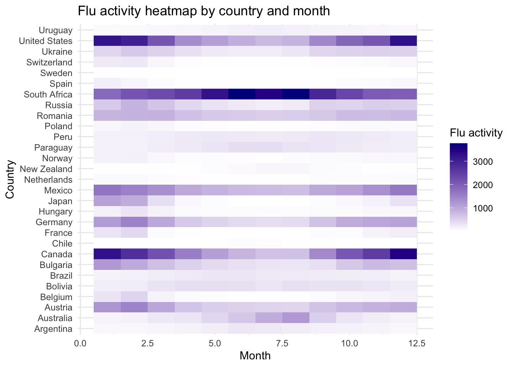
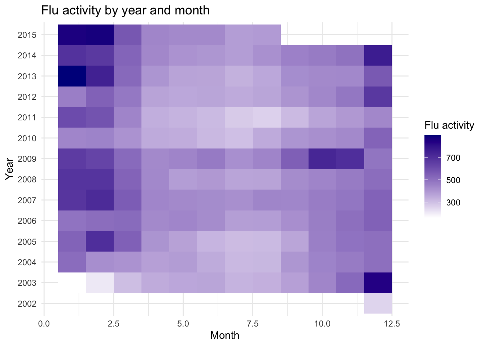

7 SQL
SQL is a kind of untraditional programming language which is used to to acces and manipulate data in relational databases. Relational databases are made up of multiple tables also known as relations. Relations contain fields (columns) and are connected by keys aka fields which are shared by multiple relations. Keys allow two or more relations to be combined and manipulated for a particular use.
In this chapter a database will be manipulated using SQL and R.
I start with loading all of the data sets and making them tidy
dengue <- read.csv(here::here("data/sql_data/dengue_data.csv"),skip = 11)
flu <- read.csv(here::here("data/sql_data/flu_data.csv"),skip = 11)# Combine seperate country columns
dengue <- dengue %>% pivot_longer(cols = !1,
names_to = "country",
values_to = "dengue_activity")
dengue <- dengue %>% separate(Date, into=c("year","month","day"), sep = "-")
unique(dengue$country)## [1] "Argentina" "Bolivia" "Brazil" "India" "Indonesia"
## [6] "Mexico" "Philippines" "Singapore" "Thailand" "Venezuela"# Seperate column Date
flu <- flu %>% pivot_longer(cols = !1,
names_to = "country",
values_to = "flu_activity")
flu <- flu %>% separate(Date, into=c("year","month","day"), sep = "-")
# Convert column year in dengue and flue to datatype integer
dengue <- dengue %>% mutate(year = as.integer(year))
flu <- flu %>% mutate(year = as.integer(year))
# Convert column country in gapminder to character
gapminder <- gapminder %>% mutate(country = as.character(country))
# Match the country codes
dengue$country <- countrycode(dengue$country,
origin = "country.name",
destination = "country.name")
flu$country <- countrycode(flu$country,
origin = "country.name",
destination = "country.name")
gapminder$country <- countrycode(gapminder$country,
origin = "country.name",
destination = "country.name")write.csv(dengue, "data/sql_data/dengue_data_tdy.csv", row.names = F)
write.csv(flu, "data/sql_data/flu_data_tdy.csv", row.names = F)
write.csv(gapminder, "data/sql_data/gapminder_data_tdy.csv", row.names = F)The next step is to create the tables for the data in DBeaver. For this I used the following PostgreSQL. The data has been imported using a command in the psql terminal
-- create the tables
create table dengue_data (
year INT,
month VARCHAR,
day VARCHAR,
country VARCHAR,
dengue_activity NUMERIC
);
create table flu_data (
year INT,
month VARCHAR,
day VARCHAR,
country VARCHAR,
dengue_activity NUMERIC
);
create table gapminder_data (
country VARCHAR,
year INT,
infant_mortality NUMERIC,
life_expectancy NUMERIC,
fertility NUMERIC,
population NUMERIC,
gdp NUMERIC,
continent VARCHAR,
region VARCHAR
);
-- load the data into the tables using this psql terminal command
\copy table_name FROM '/myfile.csv' DELIMITER ',' CSV HEADER NULL 'NA';
-- inspect data
select * from dengue_data
select * from flu_data
select * from gapminder_dataI have chosen to look at the relation between flu/dengue activity, life expectancy and child mortality. I have used the following SQL query to create this table and exported it to a .csv file.
SELECT flu_data.country, flu_data.year, flu_activity, dengue_activity, infant_mortality, life_expectancy, continent
FROM flu_data
INNER JOIN dengue_data
ON flu_data.country = dengue_data.country
AND flu_data.year = dengue_data.year
INNER JOIN gapminder_data
ON dengue_data.country = gapminder_data.country
AND dengue_data.year = gapminder_data.year;Now the newly combined data can be imported into R. Some graphs have been made using the joined table. In the first graph the average flu activity per country can be seen. The second graph shows the average flu activity per month per country. In some countries the activity increases near december while in other countries like south africa the activity increases near june. The third graph depicts infant mortality against flu activity. There is little to no fluctuation in infant mortality even though the flu activity increases and decreases quite a lot. The final graph shows the flu activity per month over the years. 2009 seems to have been a year with high activity, as can also been seen in the previous figure.
colors <- colorRampPalette(c("steelblue1", "steelblue4"))(29)
flu_den_gap_data %>%
group_by(country) %>%
summarise(mean_flu = mean(flu_activity, na.rm = TRUE)) %>%
mutate(country = reorder(country,mean_flu)) %>%
ggplot(aes(x = country, y = mean_flu, fill = country)) +
geom_col() +
coord_flip() +
labs(
title = "Average flu activity per country",
x = "Country",
y = "Average flu activity"
) +
theme_minimal() +
scale_fill_manual(values = colors) +
theme(legend.position = "none")
## `summarise()` has regrouped the output.
## ℹ Summaries were computed grouped by country and month.
## ℹ Output is grouped by country.
## ℹ Use `summarise(.groups = "drop_last")` to silence this
## message.
## ℹ Use `summarise(.by = c(country, month))` for
## per-operation grouping (`?dplyr::dplyr_by`) instead.

## `summarise()` has regrouped the output.
## ℹ Summaries were computed grouped by year and month.
## ℹ Output is grouped by year.
## ℹ Use `summarise(.groups = "drop_last")` to silence this
## message.
## ℹ Use `summarise(.by = c(year, month))` for per-operation
## grouping (`?dplyr::dplyr_by`) instead.